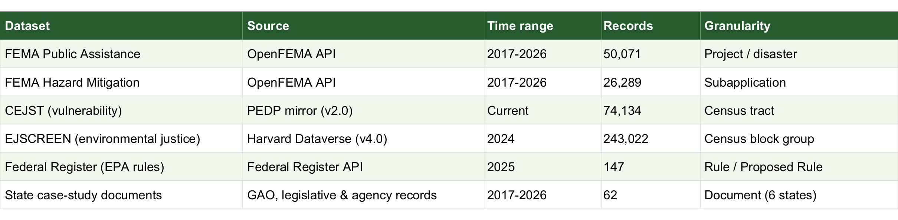

How can federal disaster-recovery and restoration mechanisms address the disproportionate harm
that extreme weather events impose on marginalized communities in the United States?
Prepared for state and local emergency management officials and legislators deciding how to
allocate climate-resilience and disaster-recovery funding.
Data at a glance
This project combines federal disaster-funding records with independent measures of community
vulnerability to see whether the two actually track each other. The table below summarizes
every dataset currently in the project.

Generated by docs/scripts/make_overview_table.R, which recomputes these counts
directly from the underlying data files. Browse the
full list of 62 case-study source documents
on GitHub.
Primary data sources
The core quantitative evidence comes from OpenFEMA, the federal government's own disaster-funding
records, compared against the Climate and Economic Justice Screening Tool (CEJST) and EPA's
EJSCREEN, which measure community vulnerability independently of any disaster program.
OpenFEMAPublic Assistance and Hazard Mitigation funding, pulled directly from FEMA's open API.
CEJSTClimate & Economic Justice Screening Tool, identifying disadvantaged census tracts.
EJSCREENEPA's environmental justice indicators at the census block-group level.
Federal RegisterEPA rules and proposed rules referencing extreme weather and community impact.